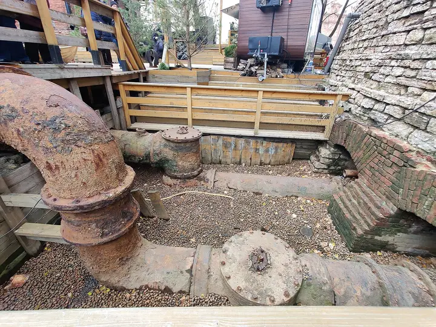

Фото: Анастасия Юрьевна Львова, CC BY-SA 4.0 · Wikimedia Commons
Планетарий · Юг
Планетарий №1
Купол в старом газгольдере — один из крупнейших в мире: звёздные программы, лекции и концерты.
- ₽ · до 1 500 ₽ на человека
- Новое в каталоге
- в 1 плане
Позвать сюда: Планетарий №1Открыть в каталоге: Планетарий №1Маршрут до места: Планетарий №1
Адрес и детали
- Адрес
- наб. Обводного канала, 74Ц
Открыть на Яндекс Картах (в новой вкладке) - Район
- Юг
- Цена
- до 1 500 ₽ на человека
- Часы работы
- пн–вс 10:00–22:00 · проверили в октябре 2026
- Телефон
- +7 (999) 222-20-00
- Проверено
- работает — проверили в октябре 2026
Планы с этим местом 1
- Планетарий №1 · Планетарий · м. Технологический институт
- 15 минут пешкомКусацу · Японское бистро
Звёздная программа под одним из крупнейших куполов мира в старом газгольдере, а потом 15 минут пешком — крошечное японское бистро с кацу-сандо и матчей.
Открыть план: Купол в газгольдере и матча-бистроПозвать сюда: Купол в газгольдере и матча-бистро
Фото: Анастасия Юрьевна Львова, CC BY-SA 4.0 · Wikimedia Commons

Входит в подборки
Похожие рядом


Что ещё рядом
Как позвать
- Выбери план, место или событие — в карточке адрес, цены и маршрут в Яндекс Картах.
- Нажми «Позвать сюда» — соберётся приглашение-игра для свидания или голосование для компании.
- Отправь ссылку в любой мессенджер: тебе ответят, а компания отметит, куда и когда может. Бесплатно и без регистрации.